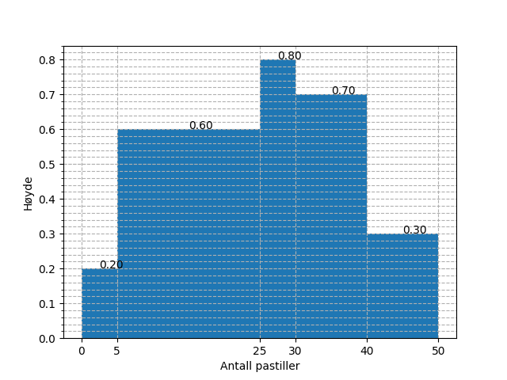

2P fagdag - Statistikkoppgaver
Du er elev 31 i klasse 2PA4.
Definisjon
Gjør rede for følgende begrep og gi et eksempel på hver:
gjennomsnitt, kvartilbredde og typetall
Bruk av sentral- og spredningsmål
Finn median, gjennomsnitt, kvartilbredde og standardavvik for følgende verdier:
15.94 8.42 25.15 4.55 16.15 11.96 10.56 16.11 20.66 13.37 34.87 26.24 32.63 15.19 -5.29
Medianen er 15.94. Gjennomsnittet er 16.43. Kvartilbredden er 14.59. Standardavviket er 10.12.
Frekvenstabell
Velg en av alternativene under.
Alternativ 1 Finn median, typetall, gjennomsnitt og variasjonsbredde for dataene undder.
| Terningkast | Frekvens |
|---|---|
| 1 | 3 |
| 2 | 4 |
| 3 | 3 |
| 4 | 3 |
| 5 | 4 |
| 6 | 5 |
Gjennomsnittet er 3.73. Medianen er 4.0. Typetallet er 6. Variasjonsbredden er 5.
Alternativ 2 Finn median og gjennomsnitt for dataene under.
| Poeng | Frekvens |
|---|---|
| [0, 20> | 5 |
| [20, 40> | 1 |
| [40, 60> | 6 |
| [60, 80> | 0 |
| [80, 95> | 5 |
| [95, 100> | 8 |
Gjennomsnittet er 63.90. Medianen er 80.00.
Den nye læreren
På en skole jobbet det i utgangspunktet 14 realfagslærere, som da hadde en gjennomsnittsalder på 37.86 år. Det begynner så en ny lærer på skolen, og brått blir gjennomsnittsalderen 37.73 år.
Hva er aldereden til den nye læreren?
Fasiten er 36.
Diagramtolkning
Diagrammet under viser visualiseringen av to datasett. Hva kan du si om sentral- og spredningsmål for de to i forhold til hverandre?
Histogrammet
Histogrammet under viser fordelingen av svar på en "hvor mange pastiller er det i krukka"-oppgave, hvor mange deltok?

- Ut fra verdiene i histogrammet over, hva vil du tro mengden pastiller i krukka var?
Fasiten er 25.
Kumulativ match
Under vises et stolpediagram og fire foreslåtte kumulative grafer. Hvilken av de fire alternativene tilhører dataene fra stolpediagrammet?
Fasiten er b).
Foreslå visualisering
Velg to av pounktene under og illustrer dem i hvert sitt diagram. Begrunn valget av diagram.
- Karakterfordelingen i en klasse etter en prøve (rundt 30 elever)
- Karakterfordelingen for en skole etter en heldagsprøve i norsk (rundt 600 elever)
- Gjennomsnittskarakteren for årets FIFA-spill for årene 1996 til 2017.
- Aldersfordelingen for de som ser på Dagsrevyen mer enn to ganger hver uke.
Statistisk analyse
Velg ett av de to alternativene under.
Alternativ 1 I en 2P-klasse ble det gjennomført en prøve, under vises poengene, som var fra 0 til 20.
8 10 5 11 10 3 15 20 16 18 7 5 1 2 20 3 6 2 20 1 20 20 10 3 16 6 5 9 17 13 14 15
- Regn ut gjennomsnitts- og medianpoengene til elevene.
- Tegn et diagram som illustrerer dataene
Medianpoengene er 10.00. Gjennomsnittspoengene er 10.34.
Alternativ 2 På en skole ble det gjennomført en 2P-prøve for et trinn. Poengene, som var fra 0 til 100, blei som vist under.
58 37 94 61 82 84 52 37 40 91 51 61 100 65 75 70 34 62 51 53 75 84 43 63 50 62 66 55 31 43 64 76 47 79 69 10 47 84 9 40 56 74 40 40 82 93 36 52 54 45
- Grupper dataene i en frekvenstabell hvor gruppene er [0, 20>, [20, 40>, [40, 60>, [60, 80>, [80, 95>, [95, 100].
- Finn gjennomsnittspoengene både via det grupperte materialet, og eksakt. Forklar eventuelle forskjeller på de to tallene.
- Vis dataene i et histogram.
Gruppene over viser til en typisk karakterinndeling. En av lærerne på skolen, ønsker å gjøre det litt vanskeligere å bestå,så alt under 25 poeng gir karakteren 1, men litt lettere å få karakteren 6, nå fra 90 poeng. Hvordan ville det påvirket karakterfordelingenpå trinnet?
| Poeng | Antall |
|---|---|
| [0, 20> | 2 |
| [20, 40> | 5 |
| [40, 60> | 19 |
| [60, 80> | 15 |
| [80, 95> | 8 |
| [95, 100> | 1 |
Eksakt gjennomsnitt er 58.54. Gruppert gjennomsnitt er 59.35.
Antall 1-ere etter endring er 2. Antall 6-ere etter endring er 4.